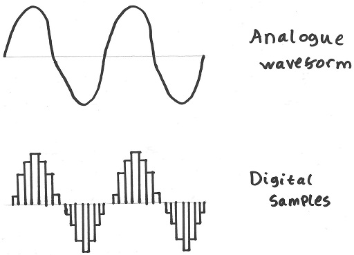
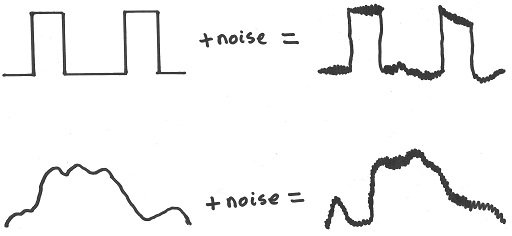

Analogue and digital signals are fundamentally different.
Analogue signals are continuous; they can take an infinite number of values in any range, e.g. 1.7543, 1.00006, 32.013419.
Digital signals are discrete; they are limited to predefined ranges and intervals, e.g. 0, 1, 2, or 0.25, 0.50, 0.75. In either of these examples
there is no such thing as 0.64423552 or any other value in between intervals.
Within the context of computing, all digital signals are binary and therefore take the value 0 or 1 only.

It is often required to convert between digital and analogue signals.
Devices such as microphones or cameras that take continuous real-world measurements need to convert the signal to digital form before it can before
processed by a computer. This is perforemed by an analogue to digital converter (ADC which operates as follows:
The continuously varying analogue signal (which could contain any type of information) is sampled at a certain frequency. For each sample, the ADC
records the current analogue value to a certain precision and turns this into a binary value. The higher the sampling frequency, the closer the
sequence of digital data is to the original analogue signal.
Devices such as speakers need to convert digtal data (in this case sound data) to an analogue voltage signal that can control the speaker. This is performed
by a digital to analogue converter (DAC).
The DAC outputs a voltage equal to each sample in series. In order to smooth out the discrete intervals, the DAC uses interpolation to create a smooth
curve between samples rather than jumping straight from one value to the next. Interpolation may not be desired if digital data is being
converted to analogue for the purpose of transmitting it and turning it back to digital, as clear intervals are needed.
The discrete nature of digital signals makes it ideal for transmitting data long distances, as it allows the removal of noise that would permenantly
and irreversibly degrade an analogue signal. Because an analogue signal can take any value, if it is modified by noise then there is no way of telling
what the original value was. However, with a digital signal (transmitted as an analogue voltage down a wire) that is limited to 1 or 0, you can easily
rectify each value to the nearest of 1 or 0. If a single bit of data comes through at 0.921, it is safe to assume it is a 1. With analogue data, it
could be anything.

As you can see, even with significant distortion, the digital signal is still clear, whereas the analogue signal is not.